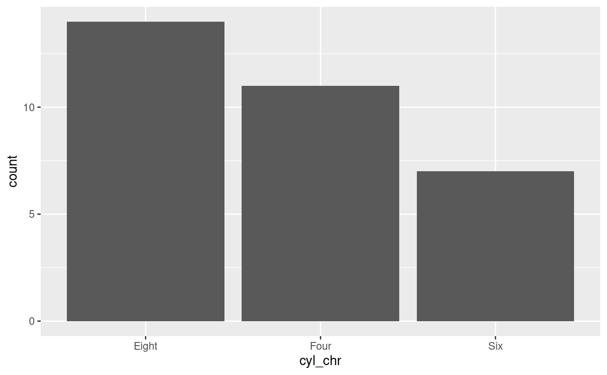
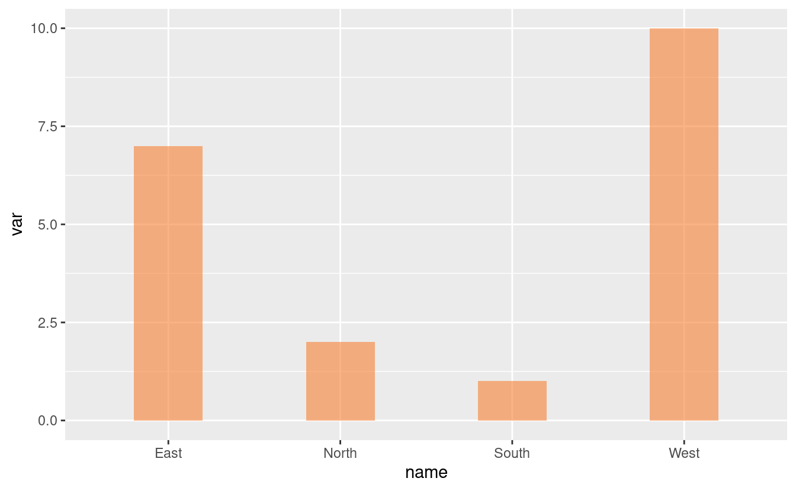
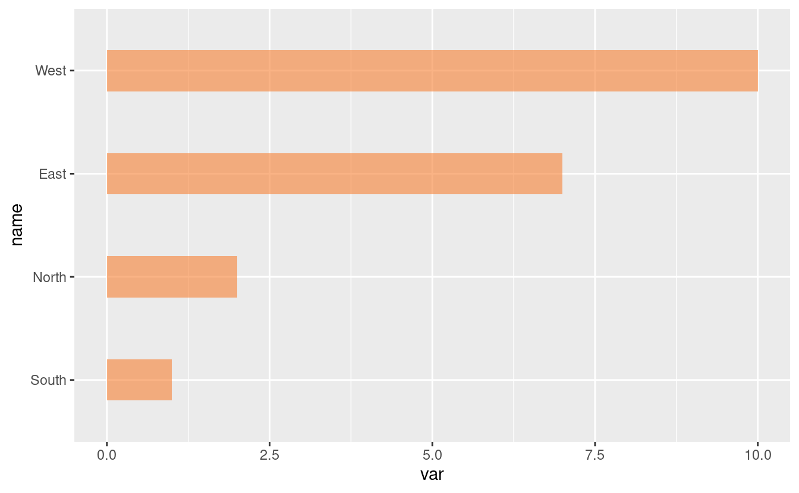
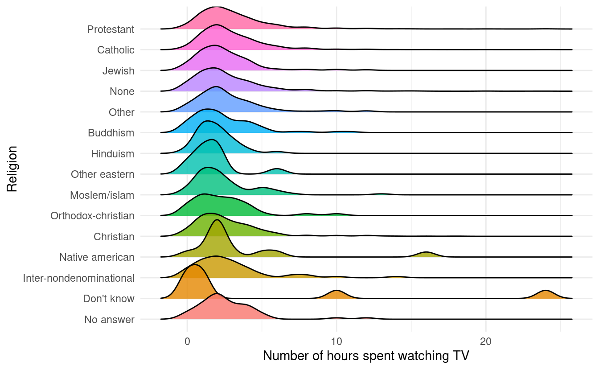

Session 6: Factors
Learn how to use them to your advantage!
 Artwork by @allison_horst
Artwork by @allison_horst
Factors form the basis for many powerful operations in R, including many performed on tabular data. The motivation for factors comes from the notion of categorical variables. These variables are non-numeric in nature corresponding to categories such as male and female, or Democrat, Republican and Independent.
A factor might be viewed simply as a vector with a bit of more information added. The extra information consists of a record of distinct values in that vector, which are called: levels.
Let us look at some examples of factors. We will make use of the package forcats, which is one of the 8 core tidyverse packages. Therefore, we start by loading the tidyverse:
library(tidyverse)
#> ── Attaching packages ─────────────────────────────────────── tidyverse 1.3.0 ──
#> ✔ ggplot2 3.3.3 ✔ purrr 0.3.4
#> ✔ tibble 3.0.4 ✔ dplyr 1.0.2
#> ✔ tidyr 1.1.2 ✔ stringr 1.4.0
#> ✔ readr 1.4.0 ✔ forcats 0.5.0
#> ── Conflicts ────────────────────────────────────────── tidyverse_conflicts() ──
#> ✖ dplyr::filter() masks stats::filter()
#> ✖ dplyr::lag() masks stats::lag()
## Check whether "forcats" is listed among the loaded packages.
## Alternatively, you could load "forcats" (and "ggplot2") separately:
# install.packages("forcats")
# library(forcats)
# library(ggplot2)
Example 1: From a numeric vector to a factor
Let us create a factor xf from a vector x with the numbers 5, 12, 13, and 12:
x <- c(5,12, 13,12)
x
#> [1] 5 12 13 12
# Convert the vector to a factor:
xf <- factor(x)
xf
#> [1] 5 12 13 12
#> Levels: 5 12 13
The distinct values in xf are 5, 12 and 13, and are listed as levels.
Let us look in a bit more details at our factor using the R functions str and unclass:
str(xf)
#> Factor w/ 3 levels "5","12","13": 1 2 3 2
unclass(xf)
#> [1] 1 2 3 2
#> attr(,"levels")
#> [1] "5" "12" "13"
Notice that the values in the factor are not stored as (5, 12, 13, 12), but rather as (1, 2, 3, 2)!
This means that our data consists first of a level-1 value, then level-2 and level 3 values, and finally another level-2 value. So, the data has been recorded by level.
The values attached to each level are recorded too, but as characters such as "5" rather than as numbers such as 5.
Example 2: From a character vector to a factor
We will use the levels Democrat (D), Republican (R), and Independent (I). First, we save a vector:
y <- c("D", "R", "R", "I", "R", "I", "D", "I")
y
#> [1] "D" "R" "R" "I" "R" "I" "D" "I"
str(y)
#> chr [1:8] "D" "R" "R" "I" "R" "I" "D" "I"
Then, we again convert the vector to a factor, and look at the levels:
fy <- factor(y)
fy
#> [1] D R R I R I D I
#> Levels: D I R
unclass(fy)
#> [1] 1 3 3 2 3 2 1 2
#> attr(,"levels")
#> [1] "D" "I" "R"
Example 3: Ordering factor levels
Some variables can be challenging to sort automatically, because the desired sorting order is not alphabetical or numeric.
For instance, months that are listed using characters:
months_vector <- c("Dec", "Apr", "Jan", "Mar")
# Try to sort using the `sort` function
sort(months_vector)
#> [1] "Apr" "Dec" "Jan" "Mar"
That didn’t sort in a useful way. But, the problem can be fixed by using a factor.
First, we create a list of the valid levels, which are all 12 months in a year:
month_levels <- c("Jan", "Feb", "Mar", "Apr", "May", "Jun",
"Jul", "Aug", "Sep", "Oct", "Nov", "Dec")
Then we convert the vector into a factor, like before, but now we additionally specify the desired levels of the factor, in order, using the levels argument:
months_factor <- factor(months_vector, levels = month_levels)
Now it sorts the way we want to!
sort(months_factor)
#> [1] Jan Mar Apr Dec
#> Levels: Jan Feb Mar Apr May Jun Jul Aug Sep Oct Nov Dec
Example 4: Use of factors in plots with forcats
4A: Plot after reordering manually with fct_relevel()
We will use the mtcars data, which was extracted from the 1974 Motor Trend US magazine, and comprises fuel consumption and 10 aspects of automobile design and performance for 32 automobiles (1973–74 models) – a data frame with 32 observations for 11 (numeric) variables,
data(mtcars)
names(mtcars)
#> [1] "mpg" "cyl" "disp" "hp" "drat" "wt" "qsec" "vs" "am" "gear"
#> [11] "carb"
dim(mtcars)
#> [1] 32 11
str(mtcars)
#> 'data.frame': 32 obs. of 11 variables:
#> $ mpg : num 21 21 22.8 21.4 18.7 18.1 14.3 24.4 22.8 19.2 ...
#> $ cyl : num 6 6 4 6 8 6 8 4 4 6 ...
#> $ disp: num 160 160 108 258 360 ...
#> $ hp : num 110 110 93 110 175 105 245 62 95 123 ...
#> $ drat: num 3.9 3.9 3.85 3.08 3.15 2.76 3.21 3.69 3.92 3.92 ...
#> $ wt : num 2.62 2.88 2.32 3.21 3.44 ...
#> $ qsec: num 16.5 17 18.6 19.4 17 ...
#> $ vs : num 0 0 1 1 0 1 0 1 1 1 ...
#> $ am : num 1 1 1 0 0 0 0 0 0 0 ...
#> $ gear: num 4 4 4 3 3 3 3 4 4 4 ...
#> $ carb: num 4 4 1 1 2 1 4 2 2 4 ...
we will select six variables (mpg, cyl, disp, hp, and wt) to create a dataset Data.
mpg: Miles per (US) gallon,cyl: Number of cylindersdisp: Displacement (cu.in.)hp: Horse powerwt: Weight (in 1000 lbs)
Data <- mtcars %>%
select("mpg", "cyl", "disp", "hp", "wt")
Now, we’ll add a new column cyl_chr by converting cyl from numeric to character:
Data <- Data %>%
mutate(cyl_chr = recode(cyl,`4` = "Four", `6` = "Six", `8` = "Eight"))
head(Data)
#> mpg cyl disp hp wt cyl_chr
#> 1 21.0 6 160 110 2.620 Six
#> 2 21.0 6 160 110 2.875 Six
#> 3 22.8 4 108 93 2.320 Four
#> 4 21.4 6 258 110 3.215 Six
#> 5 18.7 8 360 175 3.440 Eight
#> 6 18.1 6 225 105 3.460 Six
We plot a bar chart for cyl_chr:
Data %>%
ggplot(aes(x = cyl_chr)) +
geom_bar()

In the plot, the levels of the factor were arranged in alphabetical order (Eight, Four, and Six).
Instead, we want the bar graph arranged in the order Four, Six, and Eight.
An alternative to using factor(levels = ...) like we did above, is to use the fct_relevel() function from the forcats package:
Data %>%
mutate(cyl_chr = fct_relevel(cyl_chr, "Four", "Six", "Eight")) %>%
ggplot(aes(x = cyl_chr)) +
geom_bar() +
labs(x = "Cylinder", y = "Number of cars")

4B: Plot after reordering by the value of another column (fct_reorder)
Create a dataset called Data_a:
Data_a <- data.frame(name = c("North", "South", "East", "West"),
var = sample(seq(1, 10), 4))
Plot a bar chart of Data_a:
Data_a %>%
ggplot(aes(x = name, y = var)) +
geom_bar(stat = "identity", fill = "#f68034", alpha = 0.6, width = 0.4)

Reorder following the value of another column using the fct_reorder() function, and flip the plot:
Data_a %>%
mutate(name = fct_reorder(name, var)) %>%
ggplot(aes(x = name, y = var)) +
geom_bar(stat = "identity", fill = "#f68034", alpha = 0.6, width = 0.4) +
coord_flip()

There are several more convenient reordering functions in the forcats package, including:
-
fact_infreq()to reorder by occurrence frequencies of each level (see the picture at the top of the post). -
fct_inorder()to reorder by order of appearance in the dataframe. This can be useful, for example, if your dataframe has already been sorted properly, and you just need to prevent automatic alphabetic reordering when plotting.
Breakout rooms!
For the Breakout room exercises, we will use datasets from mtcars and the gss_cat dataset from the forcats package.
Exercise 1
Convert the variable gear from mtcars to a character vector with words for each number (link in example 4A), and plot a bar chart.
Then, use a factor to reorder the bars to appear in the regular “numeric” order: “Three” then “Four” then “Five”.
Hints (click here)
-
First, create a dataframe with a column that codes the gears as words, using the
mutate()andrecode()functions. -
Then, create a factor from this modified gear column, and order it manually using the
fct_relevel()function.
Solutions (click here)
- Start by loading the dataset:
data("mtcars")
- Now, create a new dataset
Gearfrom mtcars, adding a columngear_chr:
gear_df <- mtcars %>%
mutate(gear_chr = recode(gear,
`3`= "Three",
`4` ="Four",
`5`= "Five"))
head(gear_df)
#> mpg cyl disp hp drat wt qsec vs am gear carb gear_chr
#> 1 21.0 6 160 110 3.90 2.620 16.46 0 1 4 4 Four
#> 2 21.0 6 160 110 3.90 2.875 17.02 0 1 4 4 Four
#> 3 22.8 4 108 93 3.85 2.320 18.61 1 1 4 1 Four
#> 4 21.4 6 258 110 3.08 3.215 19.44 1 0 3 1 Three
#> 5 18.7 8 360 175 3.15 3.440 17.02 0 0 3 2 Three
#> 6 18.1 6 225 105 2.76 3.460 20.22 1 0 3 1 Three
- Finally, use the forcats function
fct_relevel()to rearrangegear_chrin nonalphabetical order, and plot the barchart usinggeom_bar():
gear_df %>%
mutate(gear_fct = fct_relevel(gear_chr, "Three", "Four", "Five")) %>%
ggplot(aes(x = gear_fct)) +
geom_bar() +
labs(x = "Gear", y = "Number of cars")

Exercise 2
Using the gss_cat dataset from the forcats package (available as gsscat in your environment), create a plot that compares the average number of hours spent watching TV per day across religions, and where religions are ordered by the average number of hours.
(Despite what we’ve learned last week, start by merely plotting the mean, and no distributions, using a barplot or with geom_point().)
Source: (R for Data Science)
Hints (click here)
In order to be able to order the factor by the average number of hours spent watching TV, first compute this average per religion, and save the results in a dataframe (use `mutate()` and `summarize()`).
Then, use fct_recorder() to reorder the factor.
Solutions (click here)
First, have a look at the dataset:
forcats::gss_cat
#> # A tibble: 21,483 x 9
#> year marital age race rincome partyid relig denom tvhours
#> <int> <fct> <int> <fct> <fct> <fct> <fct> <fct> <int>
#> 1 2000 Never ma… 26 White $8000 to … Ind,near r… Protesta… Souther… 12
#> 2 2000 Divorced 48 White $8000 to … Not str re… Protesta… Baptist… NA
#> 3 2000 Widowed 67 White Not appli… Independent Protesta… No deno… 2
#> 4 2000 Never ma… 39 White Not appli… Ind,near r… Orthodox… Not app… 4
#> 5 2000 Divorced 25 White Not appli… Not str de… None Not app… 1
#> 6 2000 Married 25 White $20000 - … Strong dem… Protesta… Souther… NA
#> 7 2000 Never ma… 36 White $25000 or… Not str re… Christian Not app… 3
#> 8 2000 Divorced 44 White $7000 to … Ind,near d… Protesta… Luthera… NA
#> 9 2000 Married 44 White $25000 or… Not str de… Protesta… Other 0
#> 10 2000 Married 47 White $25000 or… Strong rep… Protesta… Souther… 3
#> # … with 21,473 more rows
Then, calculate the mean number of tv-hours and create a plot:
relig <- gss_cat %>%
group_by(relig) %>%
summarize(tvhours = mean(tvhours, na.rm = TRUE))
#> `summarise()` ungrouping output (override with `.groups` argument)
ggplot(relig, aes(tvhours, relig)) +
geom_point()

It is difficult to interpret this plot because there is no overall pattern.
We can improve the plot by reordering the level of religion using fct_reorder():
relig <- gss_cat %>%
group_by(relig) %>%
summarize(tvhours = mean(tvhours, na.rm = TRUE))
#> `summarise()` ungrouping output (override with `.groups` argument)
relig %>%
mutate(relig = fct_reorder(relig, tvhours)) %>%
ggplot(aes(tvhours, relig)) +
geom_point()

Reordering religion makes it much easier to see that people in the “Don’t know” category watch much more TV.
Bonus: Exercise 3
In exercise 2, we saw large differences in the average time spent watching TV across religions, but we should perhaps have a closer look at the data by plotting distributions.
Go back to the previous Code Club session and decide which type of plot could be ideal with so many categories.
Hints (click here)
[`geom_density_ridges()`](https://wilkelab.org/ggridges/reference/geom_density_ridges.html) from the *ggridges* package is very well suited for a plot with so many categories.
Solutions (click here)
library(ggridges)
ggplot(gss_cat, aes(x = tvhours, y = relig, fill = relig)) +
geom_density_ridges(alpha = 0.8) +
labs(x = 'Number of hours spent watching TV', y = 'Religion') +
guides(fill = FALSE) +
theme_minimal()
#> Picking joint bandwidth of 0.586
#> Warning: Removed 10146 rows containing non-finite values (stat_density_ridges).
